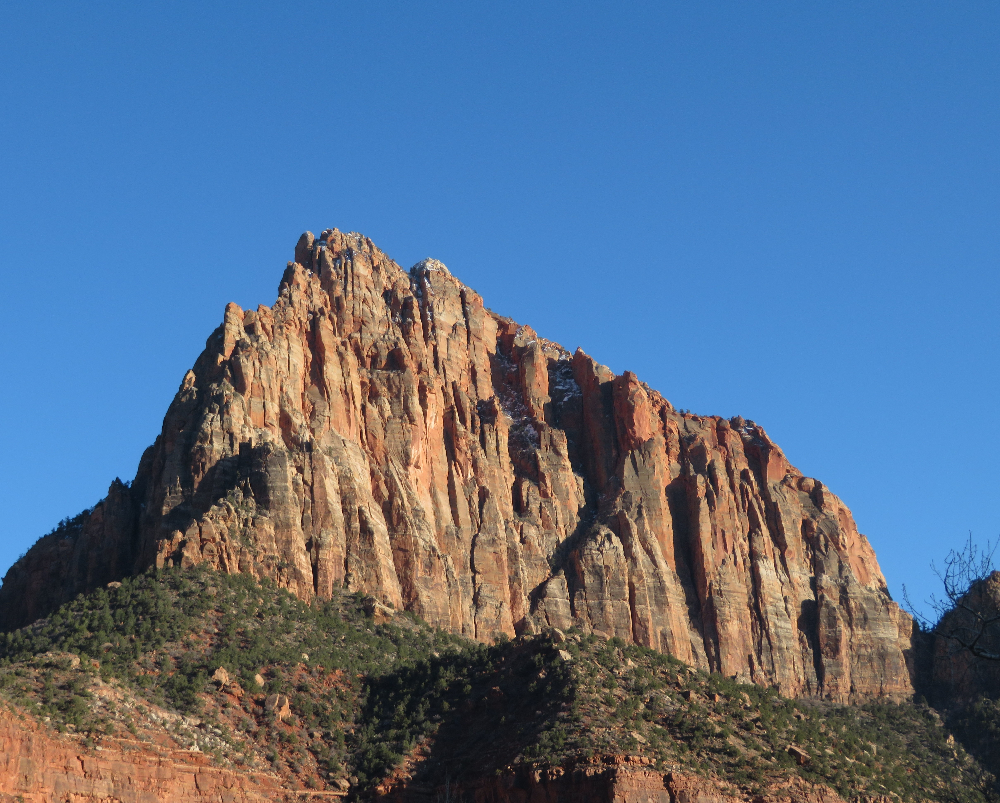
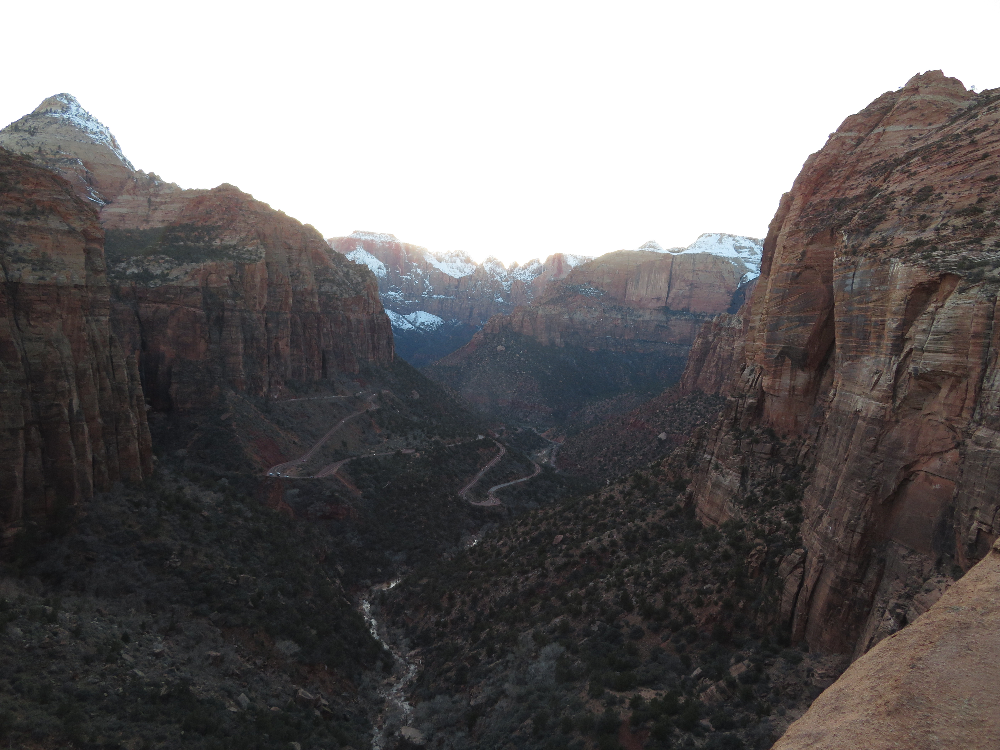
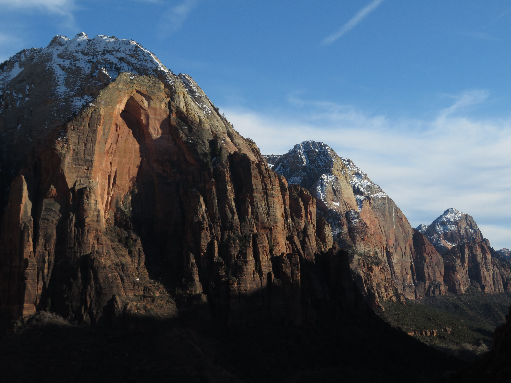

Pa'rus Trail

Angels Landing
Zion National Park in Utah is the crowl jewel of Utah, home to one of the most beautiful canyons in the world. Located in the southwest part of the state, Zion is sort of unique among all canyons, as you start at the bottom of the canyon and hike up to viewpoints instead of vice-versa. Plus, the canyon is so colorful, rivaling even the Grand Canyon in natural beauty.
Pa'rus Trail
Angels Landing
The park has two sections: The outer part of the canyon and the inner part of the canyon which is only accessible by shuttle bus. The outer part of the canyon is beautiful, with trails like the Pa'rus Trail leading to spectacular views of the Watchman peak. Another brilliant hike at the outer part of the canyon, especially in sunset, is the Canyon Overlook Trail, leading one of the most scenically amazing viewpoints of the canyon below.

Pa'rus Trail

Watchman Peak

Canyon Overlook
The Inner part of Zion canyon is absolutely stunning, with plenty of hikes and viewpoints to see and do. For example, both the Riverside Walk and the Emerald Pools Trail bring some of the best views of the canyon from the bottom. There are also plenty of hikes that bring you higher up on the canyon wall, including my favorite trail I did in Zion, the trail to Scout Lookout and Angels Landing, where I so impressed by the canyon scenery in all directions.

Riverside Walk

Emerald Pools Trail

Scout Lookout

Scout Lookout
With its fantastic landscapes, there are some cool wildlife species that also call the park home. This includes Mule Deer, which I saw near the visitor center, as well as tons of adorable Ground Squirrels, which I saw many of on the Riverside Walk and Emerald Pools trails. With other species in the park like Wild Turkeys and chipmunks, Zion has to be the best national park in Utah to see the state's desert wildlife.

Mule Deer, Visitor Center

Squirrel, Riverside Walk

Squirrel, Riverside Walk